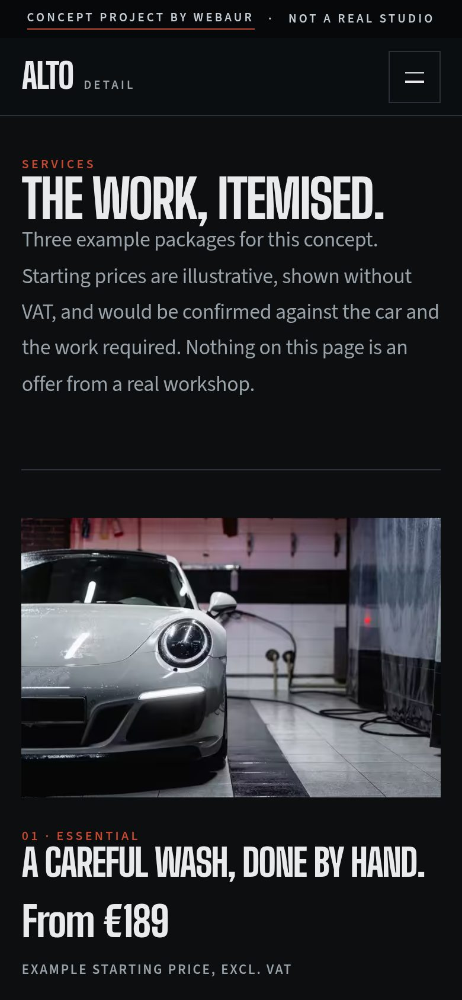
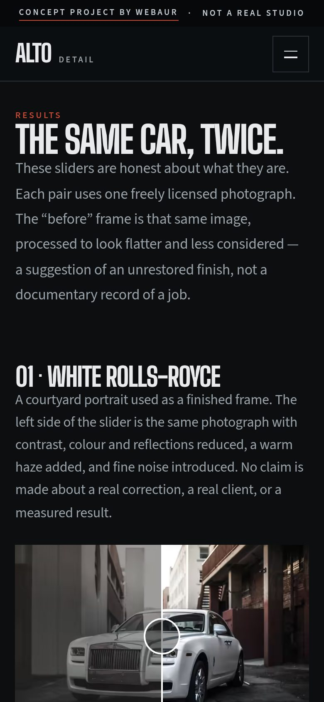
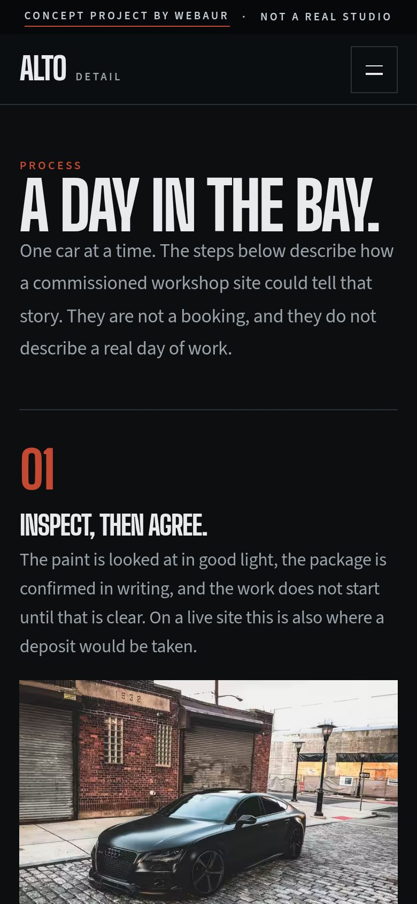
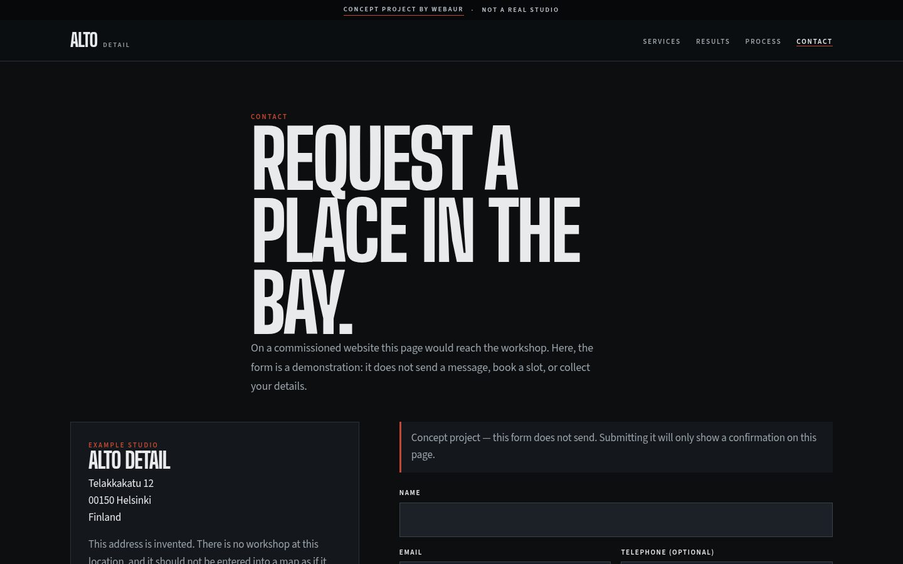
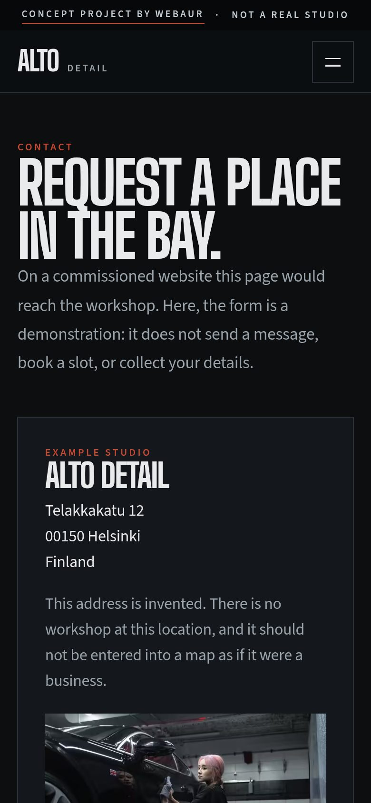

Etusivu
A quieter shine.
Tumma elokuvallinen avaus: auto ja otsikko jakavat saman kehyksen. Ensimmäinen vaikutelma on illan halli, ei vaaleanharmaa esite.


Työt / Alto Detail
Konseptiprojekti
Tumma showroom-konsepti detailing-studiolle: grafiitti, oksidinpunainen ja elokuvallinen avaus, jossa auto ja otsikko ovat samassa kehyksessä. Viisi sivua, joista tulossivun keskiössä ovat ennen–jälkeen-liukusäätimet.
Rakentaa kokonainen detailing-sivusto omalla brändillä, hinnoitelluilla paketeilla, visuaalisella vertailulla ja yhteydenottopolulla, joka ei keksi tuloksia.
Näyttää, miten WEBAUR käsittelisi teknistä palvelubrändiä: valokuvat, typografia ja toiminto (liukusäädin), joka tekee oikeasti jotain.
Detailing-studio, joka haluaa näyttää yhtä täsmälliseltä kuin työ — lähempänä showroomia kuin äänekästä autohuoltomainosta.
Tämä on konseptiprojekti. Se ei ole maksavan asiakkaan sivusto, eikä se keksi asiakkaita, arvosteluja tai tuloksia.
ALTO
DETAIL
Big Shoulders DisplayA quieter shine.Sama kirjasin kuin livedemossa, ladattuna sivustolta itseltään.
Source Sans 3Essential, Signature and Atelier — packages stated in the open.Source Sans 3, ladattuna sivustolta itseltään kuten livedemossa.
Alto Detail
A quieter shine.
Tumma elokuvallinen avaus: auto ja otsikko jakavat saman kehyksen. Ensimmäinen vaikutelma on illan halli, ei vaaleanharmaa esite.


Essential, Signature, Atelier.
Kolme pakettia esimerkkihinnoin alkaen 189 €. Valikoima on luettavissa heti, ilman että hinta piilotetaan tarjouspyynnön taakse.
The same car, twice.
Ennen–jälkeen-liukusäätimet ovat sivun päätoiminto. Ennen-kuvat ovat saman valokuvan käsiteltyjä versioita — eivät toista autoa eivätkä dokumentoitua asiakastyötä. Sivu sanoo tämän suoraan.




A day in the bay.
Työ kerrotaan yhden hallipäivän vaiheina, jotta palvelu tuntuu konkreettiselta eikä jää iskusanoiksi.
Request a place in the bay.
Pyyntölomake ja yhteystiedot, merkitty konseptiksi. Sivu ei keksi jonotuslistaa tai valmista varausta.


Liukusäätimet vertaavat saman valokuvan kahta käsittelyä. Ne ovat havainnollistavia, eivät todiste maksavasta työstä.
Big Shoulders on leveä ja mekaaninen; Source Sans 3 pitää paketit ja prosessitekstit luettavina. Oksidinpunaista käytetään säästeliäästi, kuin maalattua jarrusatulaa.
Liukusäädin vakuuttaa vain, jos kuvateksti on totta. Molemmat puolet ovat sama valokuva; “ennen” on käsitelty kehys, ja sivu sanoo sen.
Essential, Signature ja Atelier on listattu esimerkkihinnoin, jotta kävijä voi arvioida tarjonnan ilman porttia.
Aloita projekti
Kerro yrityksestäsi ja siitä, mitä haluaisit parantaa, niin jatketaan siitä yhdessä.